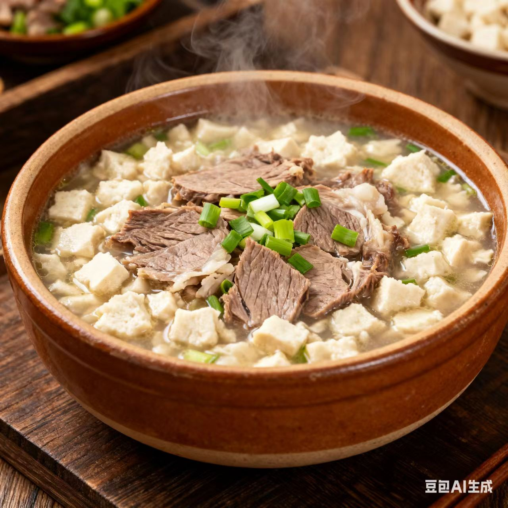
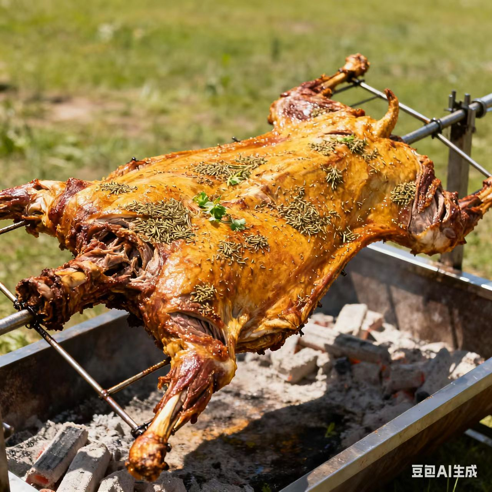
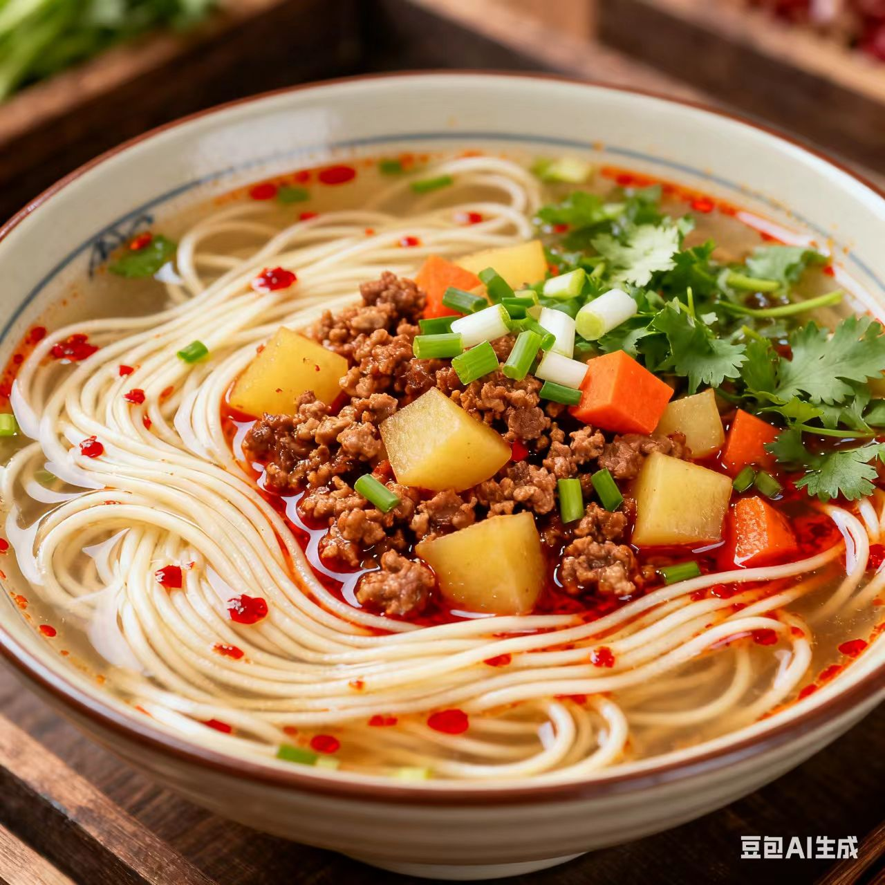

西北菜 · xibei Cuisine
豪迈醇厚里的丝路烟火与边塞风情
一、起源与历史
西北菜发源于陕西、甘肃、宁夏、青海、新疆等西北地域，依托“古丝绸之路”的商贸往来兴起，先秦时已有“肉食为主、面食为辅”的雏形，融合汉、回、维吾尔、哈萨克等多民族饮食智慧，吸纳中亚、中原饮食技法，形成“粗犷豪放、醇厚香浓”的体系，烹饪思想强调“大口吃肉、大碗喝汤”，讲究“料足味纯、朴实无华”
二、地理与气候影响
西北地区深居内陆、气候干旱（草原、戈壁、绿洲交织），牛羊肉、杂粮、瓜果、香料资源丰富，寒冷干燥的气候让饮食偏向“温热滋补、油润香浓”，丝绸之路的枢纽地位让西北菜兼具“中原农耕风味”与“西域游牧风情”
三、主要烹调技法
- 炒
- 烤
- 煮
- 炖
- 炝
每种技法都重“突出本味、锁住鲜香”，如烤菜焦香四溢，炖煮软烂入味，炝菜香辣爽口，蒸菜保留原汁原味
四、代表菜肴
-
羊肉泡馍

-
新疆烤全羊

-
陕西臊子面

五、风味与审美
西北菜的独特在于“以肉为核、以香为魂、以醇为韵”，追求浓而不腻、香而不膻、鲜而不寡的平衡，味觉逻辑体现了西北人“豪爽耿直、质朴热忱”的性格特质
六、文化意象
西北菜不仅是饮食，更是“丝路文化+游牧农耕交融”的载体——从草原的“手抓肉宴”到市井的“牛肉面摊”，西北菜承载了“边塞的豪迈”与“丝路商贸的烟火气息”
七、地方俗语
西北人的饭，羊肉占一半
一碗泡馍暖全身，一口烤肉解千愁
拓展视野：视频
拓展视野：学术资料
| 研究论文 / 报告名称 | 链接 |
|---|---|
| 《丝绸之路对西北菜饮食文化的影响》 | 查看论文 |